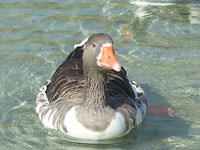

Отпуск на Крите
Фотографии сделаны в отеле "Creta Panorama" и в других местах Крита в сентябре 2008.

Старинная дверь в
греческой деревне


Закат через неделю
уже в другом месте

Гуси живут на
пресном озёре

У берега было много
крабов и осьминогов